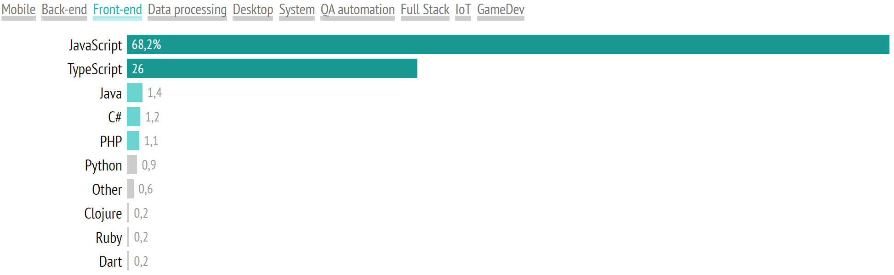

Typescript
How it was created?
Microsoft
Anders Hejlsberg
Typescript solves some of the problems of javascript
Angular as well as a number of frameworks and libraries use Typescript
Types of Typescript
Javascript is a leader in web
Typescript is in the top 10 most popular programming languages
Dynamic typing of Javascript is both an advantage and a disadvantage

Disadvantages of Typescript
How install Typescript?
Opportunities of Typescript
Types in Typescript
TypeScript supports multiple set types

Maps are typically used to define relationships between keys and values to represent application-specific data.
type IUser {
id: number
username: string
name: string
}
const user: IUser = {
id: 1,
username: 'Bear',
name: 'David'
}
Vectors are a sequential indexed data structure containing fixed types for all elements.
type IUser {
id: number
username: string
name: string
}
const user1: IUser = {
id: 1,
username: 'Bear',
name: 'David'
}
const user2: IUser = {
id: 2,
username: 'Floppa',
name: 'Alex'
}
const userVecotr: IUser[] = [user1, user2];
Tuples are also an indexed data structure, but the element types can differ depending on their position.
type IUser {
id: number
username: string
name: string
}
const user1: IUser = {
id: 1,
username: 'Bear',
name: 'David'
}
const userTuple: [IUser, number] = [user1, 10];
Type guards are expressions that perform run-time checks, the result of which can be used by the type system to narrow the scope of the argument being checked.
function isUser(u: unknown): u is User {
if(u && typeof u === 'object'){
return 'username' in u && 'currentToken' in u;
}
return false;
}
function getUserAddress(user: User | string){
if(isUser(user)) {
return fetchFromEmail(user);
}
return fetchFromId(user.id);
}
Exclusive joins are joins with a common literal field.
type Member = {
type: 'member'
currentProject: string
}
type Admin = {
type: 'admin'
projects: string[]
}
type User = Member | Admin;
function getFirstProject(u: User) {
if (u.type === 'member') {
return u.currentProject;
}
return u.projects[0];
}
Typescript has the ability to describe the types of more complex objects.
TypeScript provides a special type syntax for arrays to make it easier for you to describe and document your code.
let list: number[] = [10, 20, 30];
let colors: string[] = ['red', 'green', 'blue'];
console.log(list[0]);
console.log(colors[1]);
Interfaces are the primary way in TypeScript to combine multiple type declarations into a single named declaration.
interface IUser {
id: number;
name: string;
}
let employee: IUser = {
id: 1,
name: "Tom"
}
console.log("id: ", employee.id);
console.log("name: ", employee.name);
In addition to the simple types discussed above, there are several types that have a special meaning in TypeScript.
Generics - Generic Types.
function identity< T >(arg: T): T {
return arg;
}
let numberOutput = identity< T >(1);
let wrongOutput = identity< Number >("sdf");
let stringOutput = identity< String >("Word");
The intersection type is a very common pattern in JavaScript where you take two elements and create a new one that has the functionality of both of those objects.
enum Season { Winter, Spring, Summer, Autumn };
let current: Season = Season.Summer;
console.log(current);
current = Season.Autumn;
The behavior of the transpiler can be configured using the tsconfig.json file located at the root of the project.
In conclusion, I would like to say that TypeScript is not an ideal development tool, but at the moment it is the best solution.